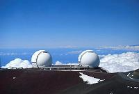
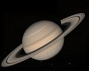
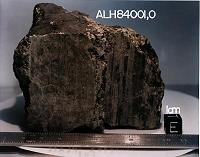

El universo: un vistazo

Telescopios
La astronomía está siendo recomendada cada vez más como parte integral del currículo de ciencia en la escuela. El estudio de astronomía está profundamente enraizado en la cultura y en la filosofía. Controla nuestra curiosidad, imaginación, y el sentido de exploración y descubrimiento compartido, y es también un área de gran interés para la gente de todas las edades –especialmente los niños. Con nuevos y mejores telescopios en tierra y en el espacio, la astronomía es una de las ciencias más excitantes y con mayor crecimiento hoy en día.
Vivimos en un Universo maravilloso. Éste ha inspirado artistas y poetas a través de las edades, desde la Grecia antigua hasta la serie de televisión Star Trek. La Astronomía, el estudio del Universo, revela un cosmos que es vasto, variado y hermoso. El firmamento es nuestra ventana en este Universo. Éste esta ahí para ser visto por todos en cualquier noche despejada, y está por doquier alrededor nuestro.

Saturno con algunas lunas
Cuando los astrónomos hablan del Universo, ellos se refieren a todo lo que es accesible a nuestras observaciones. El Universo incluye todo lo que podemos examinar o experimentar, desde la luna que orbita nuestro propio planeta hasta las islas de estrellas más distantes en la vastedad del espacio. Puesto que no podemos visitar la mayor parte del Universo, dependemos de la información que éste pueda enviarnos. Afortunadamente, recibimos una cantidad enorme de información cósmica todo el tiempo, cifrada dentro de las ondas de luz y otras formas de energía que nos llegan desde objetos situados a diferentes distancias. La tarea principal de la astronomía es decodificar esta información y armar una figura coherente del cosmos.

Un meteoro marciano
Localmente, nuestro planeta es uno de los nueve que orbitan la estrella energética placentera que llamamos el Sol. El sistema solar (sistema del sol) también incluye docenas de lunas e incontables piezas de restos rocosos y gélidos sobrantes de cuando se formó el sistema. Los astrónomos ahora tienen muchas muestras de estos otros mundos para analizar, incluyendo las rocas que los astronautas han traído al regreso de la Luna, los meteoritos (trozos de roca) que caen del espacio, incluyendo algunos que fueron lanzados por Marte hace mucho tiempo, y el polvo cósmico que podemos agarrar en lo más alto de la atmósfera.
Volver a la sección Ciencias de los orígenes
Comentarios
Comments powered by Disqus